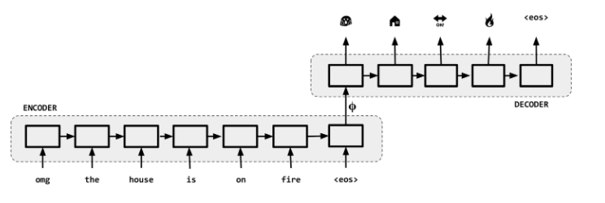
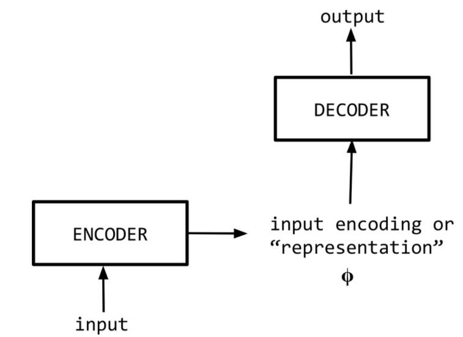
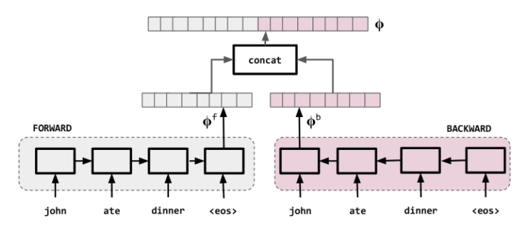
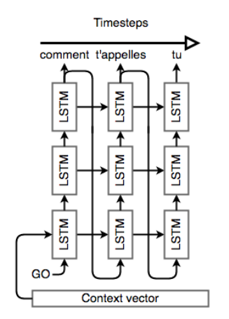
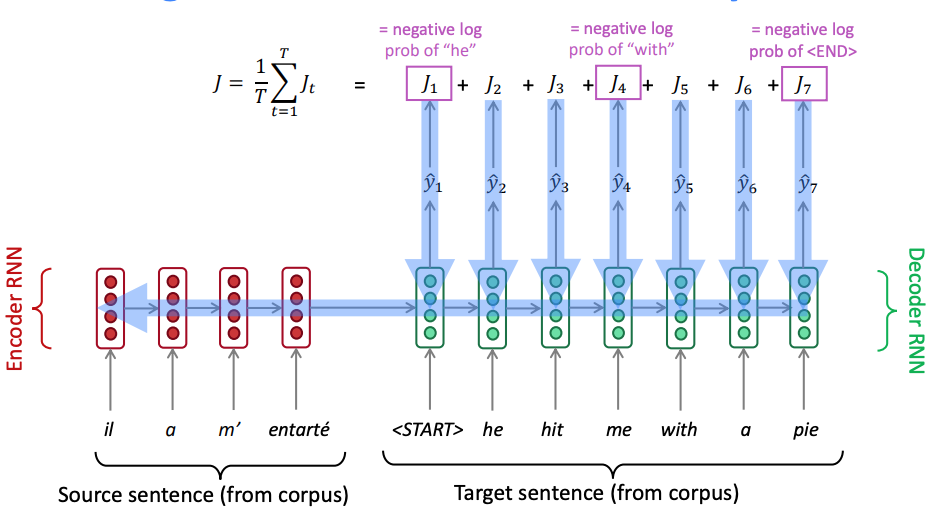

Neural Machine Translation
Contents
Neural Machine Translation¶
These notes heavily borrowing from the CS229N 2019 set of notes on NMT.
Rosetta Stone at the British Museum - depicts the same text in Ancient Egyptian, Demotic and Ancient Greek.
Up to now we have seen how to generate [embeddings]() and predict a single output e.g. [the single most likely next word]() in a sentence given the past few. However, there’s a whole class of NLP tasks that rely on sequential output, or outputs that are sequences of potentially varying length. For example,
Translation: taking a sentence in one language as input and outputting the same sentence in another language.
Conversation: taking a statement or question as input and responding to it.
Summarization: taking a large body of text as input and outputting a summary of it.
Code Generation: Natural Language to formal language code (e.g. python)
 Your smartphones translate the text you type in messaging applications to emojis and other symbols structured in such a way to convey the same meaning as the text.
Sequence-to-Sequence (Seq2Seq)¶
Sequence-to-sequence, or “Seq2Seq”, is a relatively new paradigm, with its first published in 2014 that treated English-French translation. At a high level, a sequence-to-sequence model is an end-to-end model made up of two recurrent neural networks (LSTMs):
an encoder, which takes the a source sequence as input and encodes it into a fixed-size “context vector” \(\phi\), and
a decoder, which uses the context vector from above as a “seed” from which to generate an output sequence.
For this reason, Seq2Seq models are often referred to as encoder-decoder models as shown in the next figure.
 Encoder-Decoder NMT Architecture ref
Encoder¶
The encoder network’s job is to read the input sequence to our Seq2Seq model and generate a fixed-dimensional context vector \(\phi\) for the sequence. To do that we use an RNN (LSTM) that mathematically, it evolves its hidden state as we have seen as,
and the context vector \(\mathbf \phi = q(\mathbf h_1, ..., \mathbf h_{Tx})\) is generated in general from the sequence of hidden states. \(f\) can be in e.g. any non-linear function such as an bidirectional LSTM with a given depth. The bidirectional RNN is shown schematically below.
 Bidirectional RNNs used for representing each word in the context of the sentence
In this architecture, we read the input tokens one at a time. The final hidden state of the cell will then become \(\phi\). However, because it’s so difficult to compress an arbitrary-length sequence into a single fixed-size vector (especially for difficult tasks like translation), the encoder will usually consist of stacked LSTMs: a series of LSTM “layers” where each layer’s outputs are the input sequence to the next layer. The final layer’s LSTM hidden state will be used as \(\phi\).
 Stacked LSTM Encoder (unrolled and showing the reverse direction only)
Stacked LSTM Encoder (unrolled and showing the reverse direction only)
In addition, Seq2Seq encoders will often do something strange: they will process the input sequence in reverse. This is actually done on purpose. The idea is that, by doing this, the last thing that the encoder sees will (roughly) corresponds to the first thing that the model outputs; this makes it easier for the decoder to “get started” on the output.
Decoder¶
The decoder is a language model that’s “aware” of the target words that it’s generated so far and of the input. In fact it is an example of conditional language model because it conditions on the source sentence or its context \(\phi\). The context \(\phi\) can be calculated via
NOTE: It is unfortunate but the Greek letters cant be boldfaced fonts on this site.
For example, in the simplest case, \(\mathbf \phi = \mathbf h_{Tx}\)
The decoder directly calculates,
We can write this as:
and then use the product rule of probability to decompose this to:
We can now write,
In this equation \(p(y_t | y_1, ..., y_{t-1}, \mathbf \phi)\) is a probability distribution represented by a softmax across all all the words of the dictionary. We can use an RNN (LSTM) to model the conditional probabilities
To that end, we’ll keep the “stacked” LSTM architecture from the encoder, but we’ll initialize the hidden state of our first layer with the context vector. Once the decoder is set up with its context, we’ll pass in a special token to signify the start of output generation; in literature, this is usually an
To help training, we apply teacher forcing wherein the input at each time step to the decoder is the ground truth. During inference just like in the language model we input the predicted output from the previous time step.
 LSTM Decoder (unrolled). The decoder is a language model that’s “aware” of the words that it’s generated so far and of the input.
Once we have the output sequence, we use the same learning strategy as usual. We define a loss, the cross entropy on the prediction sequence, and we minimize it with a gradient descent algorithm and back-propagation. Both the encoder and decoder are trained at the same time, so that they both learn the same context vector representation as shown next.
 Seq2Seq Training - backpropagation is end to end.
Note that the \(\arg \max\) we apply at each step on the softmax output results in some instances in suboptimal translations. The solution has been experimentally found to be the beam search heuristic that maintains a small number (e.g. 3-10) of the top likely sentences called the beam width , as opposed to the most likely sentence, and tries to extend them by one word at each step.